Yajat and George Correspondences

Average Shape and Its Triangulations

Yajat and George Triangulations
In this project, I start by producing a morph animation of my face into George's face. In order to do this, I first select corresponding points using the web tool. I then average these points for me and George to get an average shape. I perform Delauny triangulation on this average shape, and this triangulation is used for all subsequent parts relating to this morph. I visualize the correspondences, as well as the triangulation and its overlay on me/George's face. Then, I am able to use these results in order to implement a more general morph() function, which allows me to slowly transition from Image A to Image B. I use this morph function to create a GIF morphing my face to George's.
In the next part of the project, I use the Brazil Face Database, and work with the subset of images that have a neutral facial expression. Using this dataset, I find the mean face shape, morph various faces to this shape, as well as find the mean face. I also add correspondences on my face, and use these to 1) warp my face into the mean face shape and 2) warp the mean face into my geometry
Finally, by simply allowing the warp_frac and dissolve_frac parameters to go above 1, I am able to start at the population mean desscribed above and extrapolate from it, thus creating a caricature of my face.
I conclude with implementing one of the Bells and Whistles, as described below.
As part of a smooth morph, we must define corresponding features between the two images, such as noses, eyes, hairline, etc. This way, these components nicely deform from the source to the target. I use the web interface to label points and export the JSON. However, at the start of my code, I do reverse the order in which the JSON file stores the im1Points and im2Points lists, so that the data is compatible with the rest of my code.
Then, I use the two image_point lists to compute an average face shape, and perform Delauny triangulation on this average shape. This way, I can ensure that my triangles aren't too skinny, and by using the average, to lessen their potential deformations.
Below, I have visualized: 1) the starting correspondences between me and George, 2) overlaying the average shape's triangulation over my face and points, 4) overlaying the triangulation over George's face and points
|
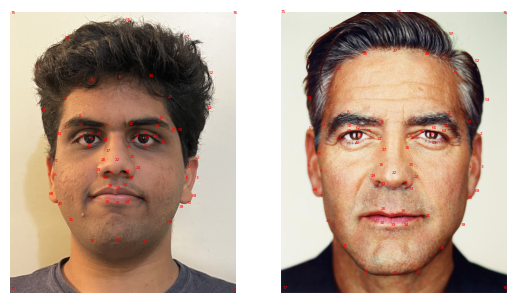
Yajat and George Correspondences |
|
|
Yajat and George Triangulations |
|
In this part, I implemented the mid_way_face function, which takes in two face and returns the mid-way face. Computing the average shape was easy and something I had already done when finding the triangulations. The next step was warping each face to the average shape, and this required the most work. Finally, we cross-dissolve the two warped images to get the final mid-way image. Here are the detailed steps I took to accomplis thish:
|
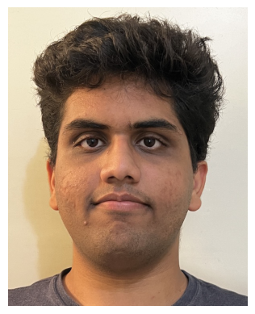
Yajat Starting Image |
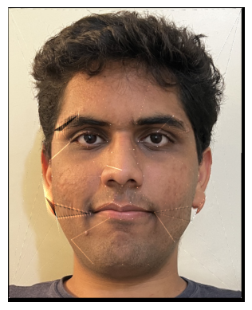
Yajat Warped to the Average Shape |
|
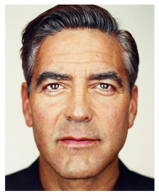
George Starting Image |
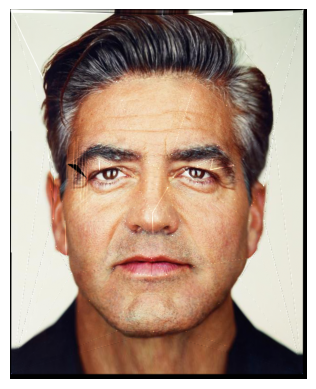
George Warped to the Average Shape |
|
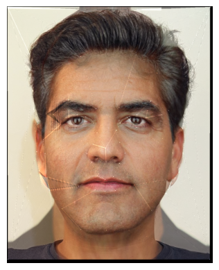
Final "Mid-Way Face" |
|
In this part, I utilize the work from the previous part to allow us to have a smooth morphing animation from Yajat to George. Essentially, I utilized my warp_image_to_avg function from part 2 to implement this part's morph() function. I used warp_frac to take a convex combination of im1 and im2, and this served as our "average" image from before. This way, we could use reuse the methods from before to warp each image to this "average" shape. Then, for the cross-dissolve stage, I just used dissolve_frac to take a convex combination of these warped images, giving us any arbitrary morphed image in the sequence from Yajat to George. To get the nice animation from Yajat to George, I created 46 frames, where I used a linear strategy: frame i was created by calling morph() with warp_frac = dissolve_frac = i/45. I then saved this as a GIF, displayed below. The first and last frames in the GIF are shown for 1s, then the rest of the GIF runs at 30 FPS.

In this part, I chose the Brazil Face Dataset, and focused on the subset of faces with a neutral facial expression. I first found the average face shape with an identical method as part 1 - I simply averaged each face's keypoint data to get the average shape. However, to improve the warping in the previous step, I also added four corner points at each image- I did this by simply looping through all the .pts file and appending the same 4 points for each file.
|
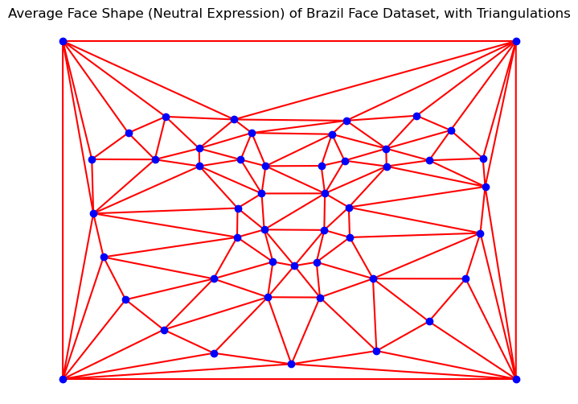
Average Face Shape of Brazil Neutral Expression Dataset |
Next, I morphed each image in the dataset to this average shape, using the warp_image_to_avg function from before. I have highlighted the morphing results for a few faces below.
|
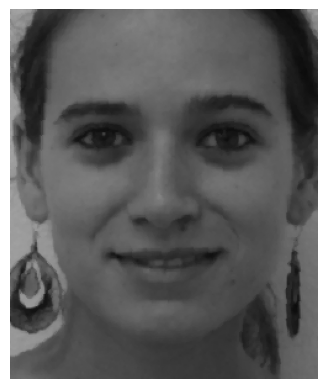
Example 1: Original Image |
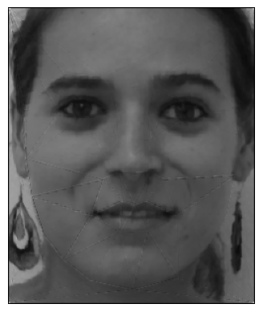
Morphed to Average Shape |
|
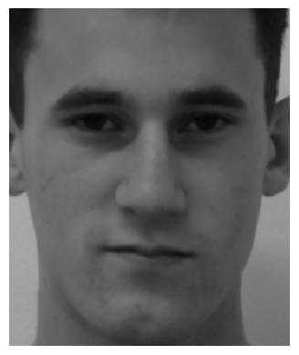
Example 2: Original Image |
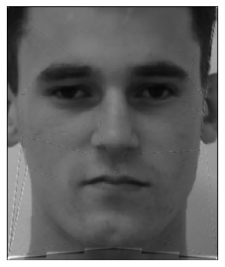
Morphed to Average Shape |
|
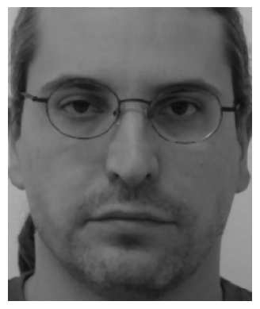
Example 3: Original Image |
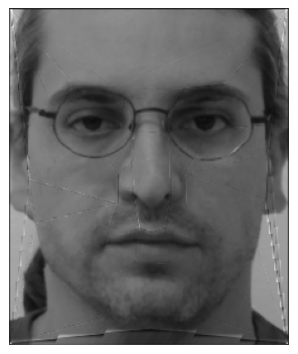
Morphed to Average Shape |
|
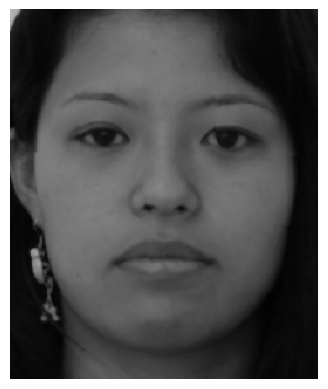
Example 4: Original Image |
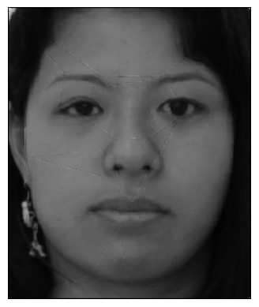
Morphed to Average Shape |
|
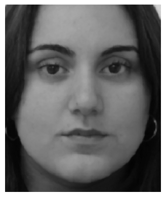
Example 5: Original Image |
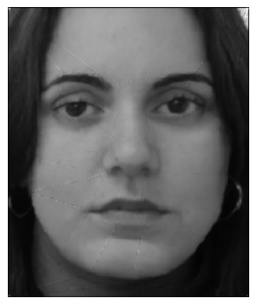
Morphed to Average Shape |
Next, I computed the average face of the population through a similar process- after morphing ALL faces in the dataset to the average shape, cross-dissolving all of these morphed images with equal weight to each image gave me the final average face for this dataset. Below is the average Brazilian face (neutral expression), as well as with its correspondences.
|
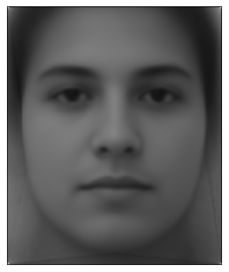
Average Face of Brazil Neutral Expression Dataset |
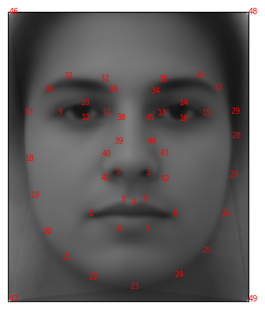
Average Face with its Correspondences |
Finally, I show the following two results: 1) warping my face into the average face geometry for this dataset found above, and 2) warping the average face above into my face's geometry. These steps required me to manually label correspondences on my face that match the structure of the point correspondces in the brazil dataset, and I accomplished this using by using "1a.jpg" as a reference image and using it to select points on my face using the web tool.
|
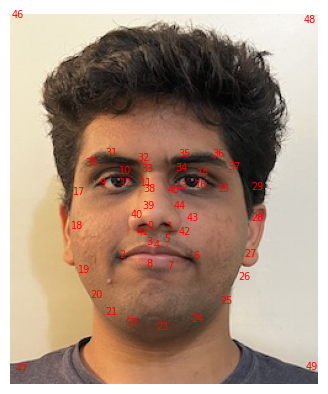
Yajat Correspondences Using the Brazil Dataset Points |
|
|
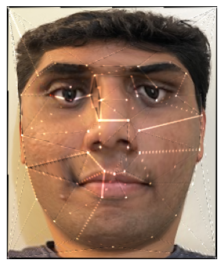
Yajat Warped into Average Brazil Geometry |
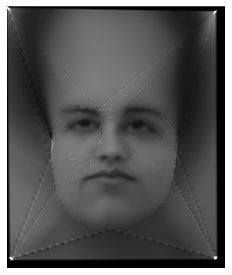
Average Brazil Face Warped into Yajat Geometry |
In this part, I use the Brazilian face mean I calculate earlier and extrapolate from it. This can be done by simply allowing dissolve_frac and warp_frac to go above 1 (or below 0) in my morph() function. This way, I am able to move extra in the direction of my face -> average Brazilian face, but go "beyond" the endpoint, thus extrapolating.Because the brazil dataset is in black and white, I also convert my image to grayscale so that the cross-dissolve is nicer. Below are a few extrapolations, as well as their corresponding warp_frac and dissolve_frac values.
|
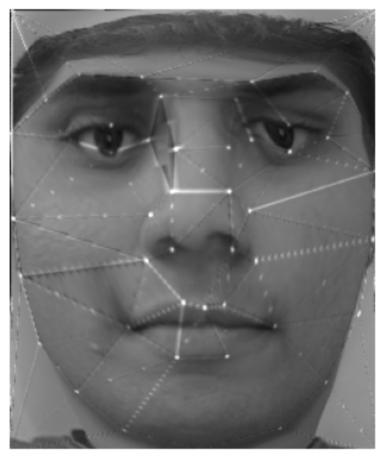
warp_frac = 1.5, disolve_frac = 0 |
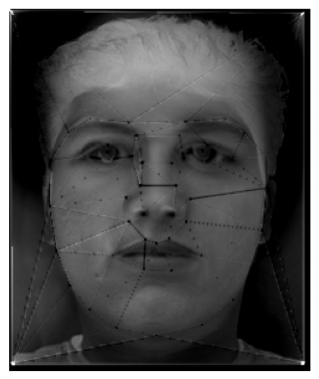
warp_frac = 0, disolve_frac = 1.5 |
|
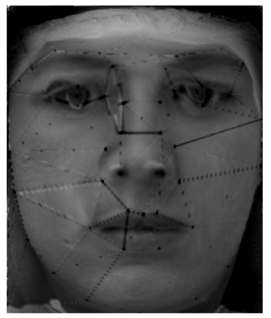
warp_frac = 1.5, disolve_frac = 1.5 |
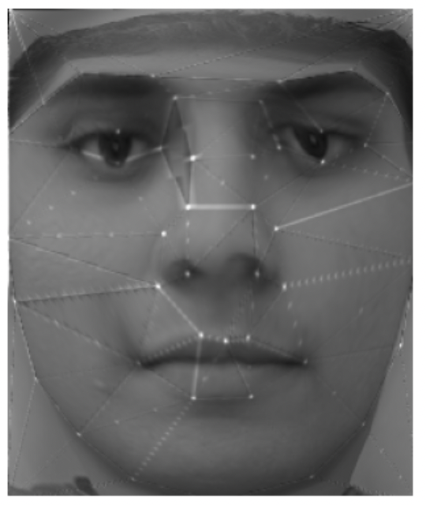
warp_frac = 1.6, disolve_frac = 0.7 |
Following the same ideas from before, in this part, I change my face's gender and ethnicity. In order to do so, I first got the average Indian woman face and average French man face from this website. For each image, I show morph animations, where 1) only the shape is morphed, 2) only the appearance is morphed (cross-dissolving), and 3) both are morphed. I resized and adjusted these images to match my existing yajat.png image. I then do the following:
Relevant intermediate results, as well as the final morphing GIFs, can be found below
|
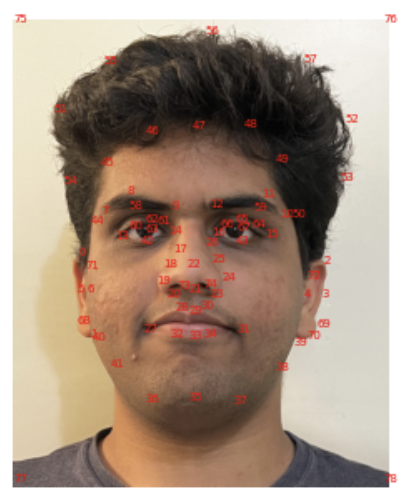
Yajat Correspondences |
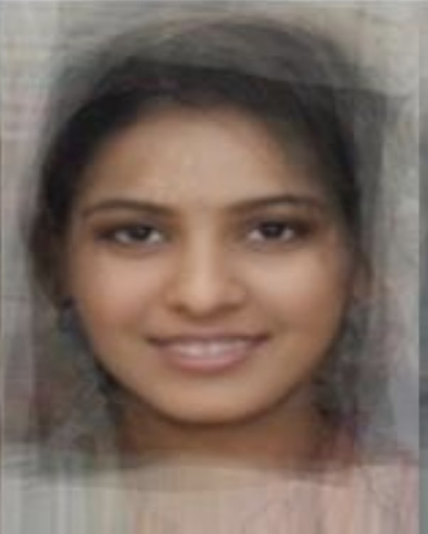
The Average Indian Woman Face |
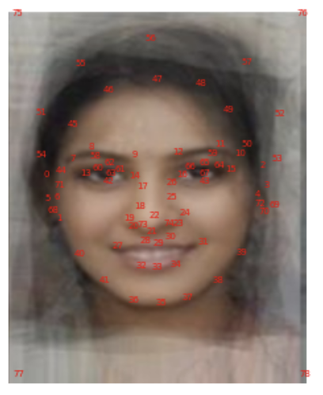
Average Indian Woman Correspondences |
|
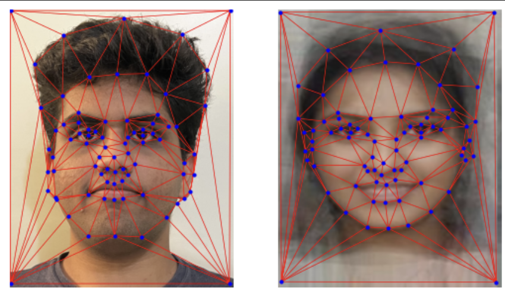
Yajat and Woman Triangulation |
||

Morphing Only Shape |

Morphing Only Apperance |

Morphing Both Shape and Appearance |
|
Yajat Correspondences |
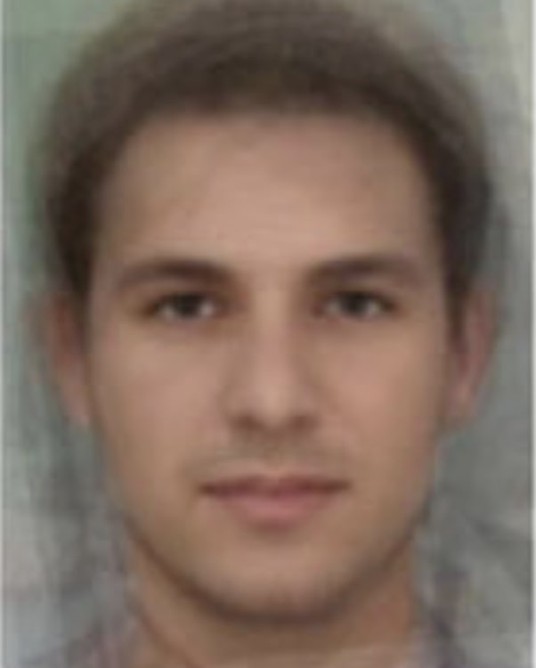
The Average French Man Face |
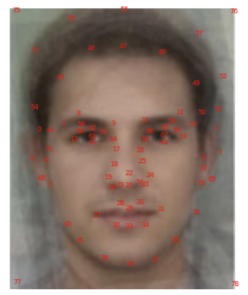
Average Indian Woman Correspondences |
|
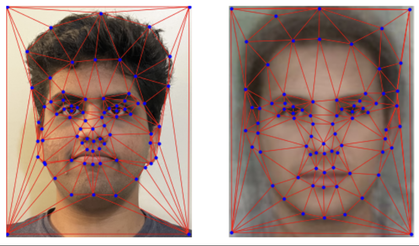
Yajat and Woman Triangulation |
||

Morphing Only Shape |

Morphing Only Apperance |

Morphing Both Shape and Appearance |